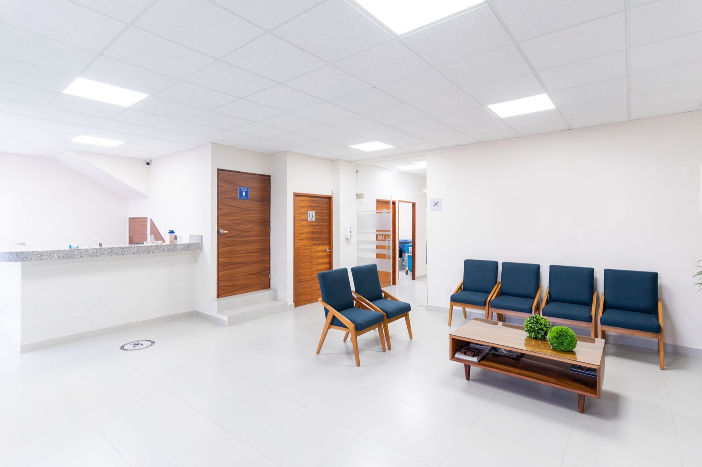

Consultation
An unhurried hour with Dr. Morel to talk through your goals, examine your nose and assess your breathing.
An unhurried hour with Dr. Morel to talk through your goals, examine your nose and assess your breathing.
We take photos and show you a computer preview, so we agree on a realistic result before anything is decided.

A last health check and a simple written plan for the day of surgery and the weeks after.
Two to three hours, fully asleep, in an approved surgical centre. Most people go home the same day.
The small protective cast on your nose comes off on day 7. You can reach us day or night with any question.
Most swelling goes down within a month. Short check-ins make sure you are healing well.
Visits at 3, 6 and 12 months. The tip of the nose can take a full year to settle into its final shape.